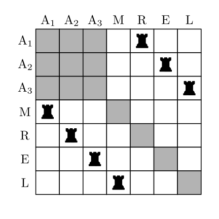

Uma permutação caótica com repetição é uma permutação, na qual, os elementos nem podem ocupar suas posições originais, nem as posições de seus elementos repetidos.
Por exemplo, MARAAEL é uma permutação caótica (com repetição) das letras da palavra AMARELA. Note que as letras A's não podem ocupar as posições 1, 3 ou 7.
Exemplo2.3.2.
Quantos são os anagramas da palavra AMARELA, sem que as letras fiquem nas posições originais?
Tecnologia2.3.3.
Usando o Sage, podemos obter a resposta desse problema sem dificuldade alguma. Com o código abaixo, basta clicar em "Evaluate (Sage)" para obter a resposta.
Ao longo dessa seção, esse problema está resolvido sem depender do uso de um computador/software. Porém, alguns códigos estão disponíveis, apenas para facilitar/conferir contas que podem ser feitas à mão. A solução foi desenvolvida de forma que a mesma ideia se aplique em casos mais gerais, no qual, mais de uma letra distinta se repete.
Para resolver o Exemplo 2.3.2, observe que o número de soluções para a palavra AMARELA é o mesmo que o número de soluções para a "palavra" AAAMREL, pois uma palavra é um anagrama da outra, então para cada permutação caótica de AAAMREL, podemos obter uma única permutação caótica da palavra AMARELA, apenas aplicando a mesma permutação que leva AAAMREL em AMARELA.
Vamos contar o número de permutações caóticas de AAAMREL para facilitar a explicação. Inicialmente troque AAAMREL por A\(_1\)A\(_2\)A\(_3\)MREL, pois assim todas as letras ficam diferentes, depois resolvemos o problema das permutações das letras A. Em seguida colocamos a palavra em um tabuleiro e usamos torres para representar as permutações. Cada permutação da palavra é representada por uma única forma de colocar \(7\) torres em um tabuleiro \(7\times 7\text{,}\) de forma que uma torre não possa atacar a outra, ou seja, em linhas e colunas diferentes. Por exemplo
Figura2.3.4.Tabela de Permutação.
fica com a seguinte configuração no tabuleiro:

Figura2.3.5.Tabuleiro da permutação MRELA\(_1\)A\(_2\)A\(_3\text{.}\)
Para uma permutação simples, as torres podem ocupar qualquer quadrado, desde que uma não possa atacar a outra. No nosso caso, os quadrados cinzas são os lugares que não queremos colocar as torres, pois assim estamos evitando os casos em que alguma letra fica em seu lugar original. Chamaremos de subtabuleiro proibido, o subtabuleiro que não queremos colocar as torres.
Defina \(B_k = \) colocações de torres, na qual, a torre da linha \(k\) está em um subtabuleiro proibido.
ou seja, o número de elementos do complementar de \((B_1\cup B_2\cup \cdots \cup B_7)\text{,}\) dividido pelo número de maneiras de permutar as letras \(A_1, A_2, A_3\text{.}\)
Pelo princípio da Inclusão-Exclusão, isso pode ser calculado da seguinte maneira:
A seguir, será mostrado que cada somatório da equação (2.3.1) envolvendo interseções de \(k\) conjuntos, pode ser calculado pelo produto de um valor \(r_k\text{,}\) a ser determinado, pelo fatorial de \((7-k)\text{.}\) Observe que
com \(r_1=13\text{,}\) pois se \(i\in \{1 ,2, 3\}\) temos 3 opções para colocar a torre na linha \(i\text{,}\) sobrando 6 torres para colocar cada uma em uma linha, logo \(\#B_i = 3\cdot 6!\text{.}\) Para \(j\in \{4, 5, 6, 7\}\text{,}\)\(\#B_j = 6!\text{,}\) pois temos apenas um lugar para colocar a torre na linha \(j\text{,}\) sobrando 6 torres para colocar cada uma em uma linha. Portanto, o valor do somatório é dado por
no qual, \(r_k(T)\) é o número de maneiras de colocar \(k\) torres em \(T\text{,}\) de forma que uma torre não possa atacar a outra e \(n\) é o número máximo de torres que é possível colocar em \(T\text{,}\) de forma que uma torre não possa atacar a outra. Em inglês esse polinômio é chamado de Rook Polynomial, para mais informações veja [6.11].
Note que na Definição 2.3.6, o tabuleiro não precisa ser quadrado nem retangular, pode inclusive ser um tabuleiro formado apenas pela parte cinza do tabuleiro da Figura 2.3.5.
Teorema2.3.7.
Seja \(T\) um tabuleiro \(n\times n\text{,}\) sem subtabuleiros proibidos. O polinômio de torre de \(T\) é dado por:
Precisamos escolher \(k\) linhas e \(k\) colunas no tabuleiro \(T\text{,}\)\(n\times n\text{,}\) para colocar as torres, de modo que uma torre não possa atacar a outra, isto pode ser feito de \(\left(C_n^k\right)^2\) maneiras. Agora precisamos escolher a posição da linha 1 na qual será colocada a primeira torre, isso pode ser feito de \(k\) maneiras, em seguida, precisamos escolher a posição da linha 2 na qual será colocada a segunda torre, o que pode ser feito de \((k-1)\) maneiras, e assim por diante, até ficarmos com uma maneira de escolher a \(k\)-ésima torre.
Assim, pelo princípio multiplicativo, o número de maneiras de colocar \(k\) torres em \(T\text{,}\) de modo que uma torre não possa atacar a outra é
A seguir, temos os códigos para gerar o polinômio de torre de um tabuleiro \(n\times n\text{.}\) Na linha 1, definimos uma matriz \(4\times 4\) de uns e guardamos na variável B. Para obter o polinômio de torre de um tabuleiro quadrado diferente, troque o número 4 da linha 1 pelo valor desejado e clique em "Evaluate (Sage)".
Definição2.3.10.
Dizemos que a união de dois tabuleiros \(T_1\) e \(T_2\) é uma união disjunta, quando nenhum quadrado de \(T_1\) está na mesma linha ou mesma coluna de \(T_2\text{.}\)
Exemplo2.3.11.
Sejam \(T^i\text{,}\) tabuleiros \(i\times i\text{,}\)\(i = 1, 2\text{,}\) então o polinômio de torre da união disjunta \(T^2\cup T^1\) é o produto dos polinômios de torre de \(T^2\) e \(T^1\text{.}\)
Seja \(T\) um tabuleiro obtido pela união disjunta de dois tabuleiros \(T_1\) e \(T_2\text{.}\)
Para colocar \(k\) torres em \(T\text{,}\) de forma que uma torre não possa atacar a outra, podemos colocar \(r_{k-i}(T_1)\text{,}\)\(0\leq i \leq k\text{,}\) torres em \(T_1\text{,}\) de forma que uma não possa atacar a outra, e \(r_{i}(T_2)\) torres em \(T_2\text{,}\) de forma que uma não possa atacar a outra. Dessa forma, dados duas torres quaisquer em \(T\text{,}\) na configuração obtida anteriormente, uma não pode atacar a outra. Portanto, o número de maneiras de colocarmos \(k\) torres em \(T\) é dado por
Aqui temos uma implementação para obter o produto de polinômios de torre. Usamos a ideia apresentada na Tecnologia 2.3.9 para gerar cada polinômio e definimos a função \(\verb|produto_polinomios_torre|\) que multiplica cada um dos polinômios de torre. As entradas da função \(\verb|produto_polinomios_torre|\) são os tamanhos dos tabuleiros. Na linha 8 a função está sendo "chamada" para gerar a polinômio de torre da união disjunta de um tabuleiro \(3\times 3\) e 4 tabuleiros \(1\times 1\text{.}\)
Voltando a solução do Exemplo 2.3.2. Pela Proposição 2.3.13 o polinômio de torre do tabuleiro da palavra AAAMREL é dado por
Observe que eram exatamente os coeficientes desse polinômio que estavam faltando para resolvermos o problema pelo princípio da Inclusão-Exclusão dado pela equação (2.3.1). Então a solução do Exemplo 2.3.2 é dada pelo polinômio de torre dado pela equação (2.3.3), com \(x^k\) substituído por \((-1)^k\cdot(7-k)!\text{,}\) dividido por \(3!\text{,}\) pois temos que descontar o número de formas de ordenar as três letras A. Fazendo as substituições, obtemos:
A implementação de uma função que substitui \(x^k\) por \((-1)^k\cdot(n-k)!\) em um polinômio de grau \(n\text{.}\) Na linha 14 a função está sendo "chamada" com o polinômio: \(6x^7 + 42x^6 + 117x^5 + 169x^4 + 136x^3 + 60x^2 + 13x + 1\text{.}\)
Exemplo2.3.16.
Quantos são os anagramas da palavra MATEMÁTICA, sem que as letras fiquem nas posições originais? (Supondo que A e Á são letras iguais)
A resposta do Exemplo 2.3.16 junto com o polinômio de torre associado está disponível aqui. Troque as informações da lista para obter o número de permutações caóticas de outra palavra desejada.
Obs. Para que o sistema atualize a resposta, basta clicar fora do campo de preenchimento, depois de atualizar os dados.
Figura2.3.18.
Subseção2.3.2Teorema das Permutações Caóticas com Repetições
Definição2.3.19.
Para cada inteiro não negativo \(n\text{,}\) o polinômio de Laguerre de ordem \(n\text{,}\) denotado por \(L_n(x)\text{,}\) é definido explicitamente pela expressão:
O número de permutações caóticas \(DR_n^{\alpha_1, \alpha_2, \ldots, \alpha_k}\) de uma lista com \(n\) objetos, onde as frequências dos elementos repetidos são \(\alpha_1, \alpha_2, \ldots, \alpha_k\) (com \(\sum \alpha_i = n\)), pode ser calculado por meio de integração.
Seja \(T\) o tabuleiro de posições proibidas formado pela união disjunta dos blocos quadrados \(T_{\alpha_i}\) (de tamanho \(\alpha_i \times \alpha_i\)). A fórmula pode ser expressa em função do polinômio de torre \(R(x, T)\text{:}\)
Inicialmente, vamos considerar que todos os \(n\) objetos são distintos (por exemplo, adicionando índices a eles). Após encontrar o total de permutações restritas válidas (\(N_{\text{dist}}\)), dividiremos o resultado por \(\alpha_1! \alpha_2! \cdots \alpha_k!\text{,}\) visto que a troca de posições entre elementos idênticos não gera novos anagramas.
Considerando os elementos como distintos, a proibição de que nenhum deles ocupe sua posição original (ou a posição de um elemento idêntico) equivale a colocar \(n\) torres que não se atacam em um tabuleiro \(n \times n\text{,}\) evitando um subtabuleiro proibido \(T\text{.}\) Esse tabuleiro \(T\) é exatamente a união disjunta dos \(k\) blocos quadrados \(T_{\alpha_i}\) de dimensões \(\alpha_i \times \alpha_i\text{.}\)
Seja \(r_j\) o coeficiente de \(x^j\) no polinômio de torre total \(R(x, T)\text{.}\) Pelo Princípio da Inclusão-Exclusão (a demonstração formal que relaciona os coeficientes de torre à fórmula de permutações restritas pode ser encontrada em [6.22]), o número de permutações válidas para os elementos distintos é:
Isso demonstra a primeira fórmula do teorema. Para chegar à forma de Laguerre, lembramos que o polinômio \(R(x, T)\) é o produto dos polinômios dos blocos disjuntos. Como \(\sum \alpha_i = n\text{,}\) podemos distribuir o fator \(x^n\) para cada bloco:
Aplicando a Proposição 2.3.20 em cada um dos fatores, sabemos que \(x^{\alpha_i} R(-x^{-1}, T_{\alpha_i}) = \alpha_i! (-1)^{\alpha_i} L_{\alpha_i}(x)\text{.}\) Substituindo no produto:
Para obtermos o número final de permutações caóticas com repetição (\(DR_n\)), dividimos \(N_{\text{dist}}\) por \(\alpha_1! \alpha_2! \cdots \alpha_k!\text{.}\) Os fatoriais do produto cancelam-se perfeitamente com os fatoriais da divisão!
Como a contagem deve ser estritamente positiva, aplicamos o valor absoluto para absorver a constante de sinal \((-1)^n\text{,}\) resultando na belíssima fórmula final:
Usando o Teorema 2.3.21 para calcular o número de soluções do Exemplo 2.3.16. Foram usados os métodos abs e integral que calculam o valor absoluto e a integral, respectivamente.
Tecnologia2.3.23.
A implementação da função DR (derangement with repetition) usando o Teorema 2.3.21. Os parâmetros são as quantidades que cada elemento figura na lista. Por exemplo, para a palavra MATEMATICA usamos a entrada 3, 2, 2, 1, 1, 1, pois são 3 letras A, 2 letras T, 2 letras M, 1 letras E, 1 letra I e 1 letra C.
Exercícios2.3.3Exercícios
1.
(PRMO 2019) Diremos que um rearranjo das letras de uma palavra não tem letras fixas, quando o rearranjo é colocado diretamente abaixo da palavra, e nenhuma coluna tem a mesma letra repetida. Por exemplo, HBRATA é um rearranjo sem letras fixas de BHARAT. Quantos rearranjos distinguíveis sem letras fixas que BHARAT tem? (As duas letras A são consideradas idênticas.)
A palavra ARARA possui 5 letras, sendo 3 letras A e 2 letras R. As posições originais das letras A são 1, 3 e 5.
Para que uma permutação seja caótica, nenhuma letra A pode ocupar essas três posições. Logo, as 3 letras A teriam que ser alocadas nas posições restantes, que são apenas a 2 e a 4.
Como temos 3 letras para apenas 2 vagas, pelo Princípio da Casa dos Pombos, é impossível acomodá-las. Portanto, o número de permutações caóticas é 0.
3.
Determine o número de permutações caóticas da palavra BATATA.
A palavra BATATA possui 6 letras: 3 letras A (posições 2, 4, 6), 2 letras T (posições 3, 5) e 1 letra B (posição 1). Podemos resolver o problema puramente por dedução lógica.
Para que a permutação seja caótica, as 3 letras A não podem ocupar as posições 2, 4 e 6. Logo, elas devem obrigatoriamente ocupar as posições restantes: 1, 3 e 5.
Com as posições 1, 3 e 5 preenchidas pelas letras A, restam as posições 2, 4 e 6 para acomodar as letras T, T e B. Verificando as restrições originais para essas três letras:
As posições originais das letras T eram 3 e 5 (que já estão seguras, ocupadas por A).
A posição original da letra B era 1 (que também está segura, ocupada por A).
Portanto, qualquer arranjo do grupo {T, T, B} nas posições livres {2, 4, 6} será válido. O número de maneiras de organizar essas três letras é a permutação com repetição:
Os três anagramas caóticos válidos são ATATAB, ATABAT e ABATAT.
4.
Usando o Princípio da Inclusão-Exclusão e Polinômios de Torre, calcule o número de anagramas da palavra OURO onde nenhuma letra fica em sua posição original.
A palavra OURO tem 4 letras: O (2 vezes), U (1 vez) e R (1 vez). O tabuleiro de posições proibidas \(T\) é formado por um bloco \(2 \times 2\) para a letra O, e dois blocos \(1 \times 1\) para as letras U e R. Os polinômios de torre individuais são:
Letra O (Bloco \(2 \times 2\)): \(R(x, T_O) = 1 + 4x + 2x^2\)
Letra U (Bloco \(1 \times 1\)): \(R(x, T_U) = 1 + x\)
Letra R (Bloco \(1 \times 1\)): \(R(x, T_R) = 1 + x\)
O polinômio de torre total \(R(x, T)\) é o produto deles:
Aplicamos o Princípio da Inclusão-Exclusão trocando \(x^k\) por \((-1)^k (4-k)!\) para encontrar o total de arranjos considerando os elementos temporariamente distintos (\(N_{\text{dist}}\)):
Em um estacionamento, há 6 vagas em linha ocupadas por 2 carros pretos, 2 carros brancos e 2 carros pratas. O manobrista precisa reorganizar os carros de modo que nenhuma vaga seja ocupada por um carro da mesma cor que a ocupava originalmente. De quantas maneiras as cores podem ser distribuídas nas vagas?
Temos 3 grupos de 2 elementos idênticos. O tabuleiro de posições proibidas é formado por três blocos disjuntos de \(2 \times 2\text{.}\) O polinômio de torre de um único bloco \(2 \times 2\) é \(2x^2 + 4x + 1\text{.}\)
A palavra CORREDOR possui 8 letras (3 R, 2 O, 1 C, 1 E, 1 D). Utilizando o teorema dos polinômios de Laguerre, escreva a expressão integral que calcula o número de permutações caóticas dessa palavra e verifique seu valor através de um código no SageMath.
Pelo teorema das permutações caóticas com repetição, a quantidade de deranjos é dada pelo valor absoluto da integral de \(0\) a \(\infty\) do produto dos polinômios de Laguerre associados às frequências de cada elemento, multiplicados por \(e^{-x}\text{.}\)
As frequências das letras na palavra CORREDOR são \(r_1=3\) (letra R), \(r_2=2\) (letra O), e para as letras restantes \(r_3=1\) (C), \(r_4=1\) (E) e \(r_5=1\) (D). A expressão integral procurada é: